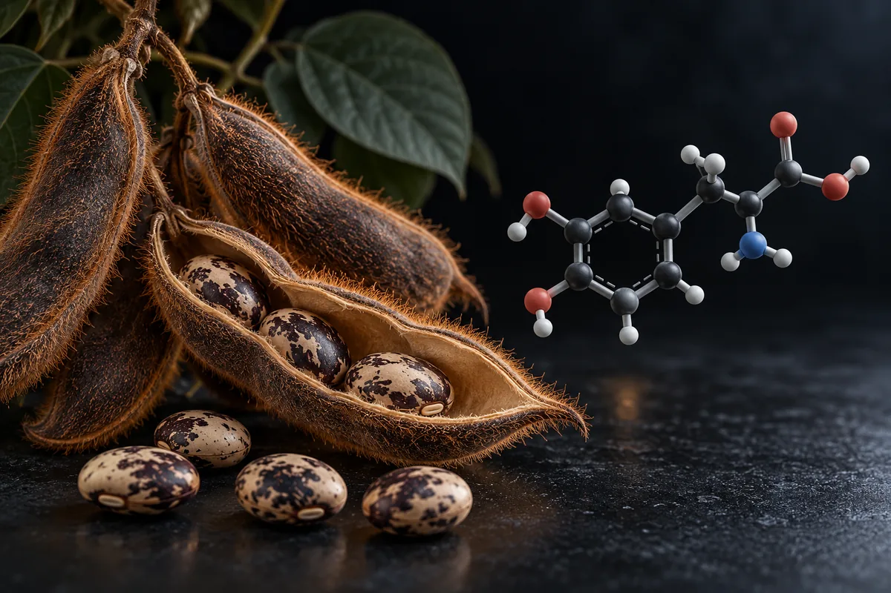

Mucuna pruriens (feijão-veludo; fonte de L-dopa), com vitamina B6 e chá verde
O "+878% de GH" é de 15 homens, sem placebo, com uma mistura de duas plantas, e o pico não passou de 2 ng/mL. E a vitamina B6 junto anula o efeito da L-dopa.

Material experimental. Leia antes de usar qualquer coisa daqui.
Nada nesta página é recomendação médica, prescrição ou plano de tratamento. É uma tradução organizada de protocolos que circulam em comunidades de pesquisa e, quando existe, do que ensaios publicados testaram. As duas coisas estão marcadas de forma diferente — e não são equivalentes.
A maior parte dos compostos aqui não tem aprovação da ANVISA nem da FDA para uso humano. Vários são vendidos com rótulo de "uso exclusivo em pesquisa", o que significa que não passaram por controle de pureza, esterilidade ou dosagem para consumo por pessoas. Dose descrita por comunidade não é dose validada: é o que alguém relatou ter feito.
Converse com um profissional de saúde habilitado antes de considerar qualquer um destes compostos. Se você já usa algum e sentir algo fora do previsto, procure atendimento — não espere o próximo exame de rotina.
Resumo
A semente de Mucuna pruriens contém levodopa (L-dopa), o mesmo remédio usado no Parkinson e num teste hospitalar antigo de hormônio do crescimento (GH). O "+878%" dos vídeos existe: é de um estudo de 2011 com 15 homens, sem grupo placebo, com uma mistura de mucuna e outra planta, financiado em parte por uma empresa de suplementos; o GH foi de 0,18 para 1,76 ng/mL. A vitamina B6 vendida como protetora faz o contrário: sem um bloqueador como a carbidopa, ela acelera a destruição da L-dopa fora do cérebro e, num estudo de 1975, inibiu a subida do GH. Mucuna é L-dopa, com as mesmas interações e efeitos adversos.
Por que esta página existe
A mucuna aparece descrita em vídeos curtos sobre saúde masculina que vi publicados na internet, como uma "semente africana" que, por conter L-dopa, faria o hormônio do crescimento subir 877,7% em 60 minutos, ou 878% em 80 minutos, ou 243% em uma hora. Os vídeos dizem que o efeito é maior em jejum, que o mesmo princípio é usado num teste hospitalar de reserva de GH "desde os anos 70", citam o New England Journal of Medicine, o Journal of Clinical Endocrinology e uma "Universidade de Mendes", e reconhecem que a dose farmacêutica dá náusea em quase um de cada três, ressalvando que o extrato natural "é outra conversa". Um dos vídeos monta um protocolo com vitamina B6, que "protegeria os receptores cerebrais", e chá verde, "para o fluxo".
Levantei as alegações de 4 vídeos curtos, separei as 14 verificáveis e procurei cada estudo citado. A vitamina B6 e o chá verde entram aqui como seções, porque só aparecem como adjuvantes da mucuna. Nenhum número desta página veio da fonte secundária do site.
A Mucuna pruriens é uma leguminosa trepadeira de regiões tropicais, chamada em inglês de velvet bean, feijão-veludo. Segundo a introdução do estudo de 2011 citado nos vídeos, a L-dopa está nas sementes e é considerada o principal ativo. A planta também é usada em laboratório para provocar coceira experimental (o modelo chamado cowhage), o que infla as buscas, como se vê abaixo.
Este site trata de assunto vizinho também em Vitamina B6 (piridoxina), adjuvante da mucuna e Chá verde (adjuvante da mucuna).
O mecanismo é o de um remédio, e é conhecido desde 1970
A levodopa é o precursor da dopamina e o tratamento de referência do Parkinson. Em 1970, Boyd e colegas publicaram no New England Journal of Medicine que a L-dopa estimula a secreção de GH em humanos. Desde então ela é usada como teste de reserva de GH, inclusive em crianças: Porter e colegas descreveram "o teste da levodopa para reserva de GH em crianças" em 1973. Num estudo de 1978 no Journal of Clinical Endocrinology & Metabolism, 1 g de L-dopa oral levou o GH a 23,7 ± 14,7 ng/mL em homens voluntários, com o pico da L-dopa no sangue em momentos muito variáveis, de 30 a 230 minutos.
Duas consequências práticas. Primeira: um teste de reserva mede se a hipófise consegue liberar GH quando provocada; uma subida aguda de GH depois de uma dose não é o mesmo que ganho de músculo ou de gordura perdida, e nenhum estudo que localizei mediu isso com mucuna. Segunda: a mucuna não é "um natural parecido com" a L-dopa. Ela é uma fonte de L-dopa, a mesma molécula, com as mesmas interações e os mesmos efeitos adversos — só que sem dose padronizada e sem a carbidopa, o bloqueador que os remédios usam para reduzir a destruição da L-dopa fora do cérebro.
Quanta evidência existe, de verdade
Os números abaixo foram levantados por mim em 16 de outubro de 2026, no PubMed e no ClinicalTrials.gov. A consulta de cada linha está ao lado do número, para qualquer pessoa repetir e me contradizer.
| Base | Consulta | Resultado |
|---|---|---|
| PubMed | "Mucuna pruriens" OR mucuna | 598 artigos |
| PubMed | ("Mucuna pruriens" OR mucuna) AND (Randomized Controlled Trial[Publication Type] OR Meta-Analysis[Publication Type] OR Clinical Trial[Publication Type]) | 23 artigos |
| PubMed | ("Mucuna pruriens" OR mucuna) AND (cowhage OR itch OR pruritus) | 47 artigos |
| PubMed | ("Mucuna pruriens" OR mucuna) AND (growth hormone OR somatotropin OR GH) | 6 artigos |
| PubMed | ("Mucuna pruriens" OR mucuna) AND (Parkinson Disease) | 116 artigos |
| PubMed | (levodopa OR L-dopa) AND (growth hormone) | 911 artigos |
| PubMed | (levodopa OR L-dopa) AND (pyridoxine OR "vitamin B6") | 151 artigos |
| PubMed | (levodopa OR L-dopa) AND ("green tea" OR EGCG OR epigallocatechin OR catechin) | 56 artigos |
| ClinicalTrials.gov | intervenção: mucuna | 8 estudos registrados |
| ClinicalTrials.gov | intervenção: (mucuna) AND AREA[Phase]PHASE3 | 0 ensaios de fase 3 |
Leitura honesta desses números
- Boa parte da "mucuna" no PubMed é coceira. 47 artigos tratam da planta como modelo de coceira; dos 23 marcados como ensaio, vários são desses experimentos de pele, dois são de ração para cordeiros e um trata do sabor de carne bovina.
- Mucuna e GH: 6 artigos, e só 1 em humanos. É o estudo de 2011 com a mistura de duas plantas. Os outros são de peixes, ratos, cultivo da planta e células.
- Os ensaios clínicos sérios com mucuna são de Parkinson, não de GH nem de desempenho.
- Dos 8 registros no ClinicalTrials.gov, 7 usam a planta em modelos de coceira ou dor e 1 é o ensaio de Parkinson de 2017. Nenhum de fase 3. Registro não é resultado.
- L-dopa e GH: 911 artigos. É a literatura do teste hospitalar e da endocrinologia; ela confirma que a L-dopa sobe o GH de forma aguda, não que suplemento de mucuna produza benefício.
- Contagem de artigo mede atenção acadêmica, não evidência de desfecho.
Os estudos que sustentam as alegações
Segundo o PubMed, estes são os trabalhos concretos por trás do que se diz sobre mucuna, L-dopa e GH. Leia o que cada um mediu, e em quantas pessoas.
| Estudo | N | Contexto | O que relatou | Ressalva |
|---|---|---|---|---|
| Alleman et al., 2011 Nutr Metab Insights 4:55-63 · PMID 23946662 | 15 | Homens treinados; dose única de 2.250 mg de mistura de Chlorophytum borivilianum e mucuna, em jejum; dois dias de teste; Universidade de Memphis | GH de 0,18 ng/mL antes para 1,56 (60 min, +767%), 1,76 (80 min, +878%) e 1,48 ng/mL (100 min, +722%) | Sem grupo placebo; mistura de duas plantas; dois participantes com GH basal alto excluídos da análise; financiado em parte por uma empresa de suplementos; os autores chamam o pico de "< 2 ng/mL" de fisiologicamente incerto |
| Boyd et al., 1970 N Engl J Med 283(26):1425-9 · PMID 5481776 | não informado (sem resumo no PubMed) | Estimulação da secreção de GH por L-dopa | Título: L-dopa estimula a secreção de GH humano | É a citação do New England dos vídeos; não li o texto |
| Boyd et al., 1978 J Clin Endocrinol Metab 47(6):1341-7 · PMID 263355 | 14 e 24 homens | 1 g de L-dopa oral contra placebo | GH subiu para 23,7 ± 14,7 ng/mL; prolactina caiu; pico de L-dopa entre 30 e 230 min | Teste farmacológico, não suplemento |
| Porter et al., 1973 Am J Dis Child 126(5):589-92 · PMID 4200807 | crianças (sem resumo) | Teste da levodopa para reserva de GH | Título descreve o teste em crianças | Não li o texto; não localizei o "4,8 para 16,5" |
| Mims et al., 1975 J Clin Endocrinol Metab 40(2):256-9 · PMID 1117978 | 12 | Homens; 1 g de L-dopa oral, com e sem piridoxina (vitamina B6) na veia | A piridoxina inibiu a subida do GH provocada pela L-dopa | Piridoxina intravenosa; mostra o mecanismo da interação |
| Tas et al., 2026 J Pediatr Health Care 40(1):128-136 · PMID 40990891 | 129 crianças | Teste de GH com arginina e levodopa/carbidopa | Náusea ou vômito em 25% sem ondansetrona, 38% com ondansetrona precoce e 51% com tardia | Retrospectivo; crianças; teste com carbidopa |
| Katzenschlager et al., 2004 J Neurol Neurosurg Psychiatry 75(12):1672-7 · PMID 15548480 | 8 | Parkinson; doses únicas de 15 e 30 g de preparado de mucuna contra 200/50 mg de levodopa/carbidopa; duplo-cego, cruzado | Com 30 g, início mais rápido (34,6 contra 68,5 min) e pico de L-dopa 110% maior | Mostra que mucuna entrega muita L-dopa |
| Cilia et al., 2017 Neurology 89(5):432-438 · PMID 28679598 | 18 | Parkinson avançado; pó de semente torrada em dose única, contra levodopa com benserazida e placebo | Não inferior à levodopa com benserazida; a dose alta teve menos discinesia | Dose única; usado como alternativa barata em países pobres |
| Cilia et al., 2026 J Parkinsons Dis 16(1):99-109 · PMID 41269916 | 32 | Parkinson sem tratamento na África Subsaariana; mucuna ou levodopa com inibidor, 12 meses, aberto | Resultados semelhantes; eventos adversos em 56% com mucuna e 37,5% com o remédio (p = 0,48); 12,5% abandonaram | Fase 2, aberto, pequeno |
Doses usadas em estudos humanos publicados
Isto não é recomendação de dose: é o registro do que foi administrado em estudos publicados, com a finalidade de cada um. Fora do contexto do estudo, esses números não se transferem.
| Estudo | Dose | Duração | Finalidade do estudo |
|---|---|---|---|
| Alleman et al., 2011 | 2.250 mg de mistura de mucuna e Chlorophytum borivilianum | Dose única | GH em homens treinados |
| Boyd et al., 1978; Mims et al., 1975 | 1 g de L-dopa oral | Dose única | Teste de GH |
| Katzenschlager et al., 2004 | 15 g e 30 g de preparado de mucuna | Dose única | Parkinson |
| Cilia et al., 2017 | 12,5 e 17,5 mg/kg de pó de mucuna | Dose única | Parkinson |
| Cilia et al., 2026 | Ajustada por peso e estágio da doença | 12 meses | Parkinson |
Nenhum vídeo informou dose. O teor de L-dopa da semente e dos extratos varia; o próprio estudo de 2011 diz que mudou a padronização da mucuna e que a L-dopa entregue foi menor que nos estudos de comparação.
Vitamina B6: o adjuvante que trabalha contra a L-dopa
O vídeo diz que a vitamina B6 "protege os receptores cerebrais" junto com a L-dopa. A literatura diz o contrário, e há mais de 50 anos.
A vitamina B6 é o cofator da enzima que transforma L-dopa em dopamina. Quando essa conversão acontece fora do cérebro, a dopamina formada não atravessa a barreira hematoencefálica e a L-dopa se perde. A bula americana da carbidopa com levodopa diz textualmente que a piridoxina, em doses orais de 10 a 25 mg, "pode reverter os efeitos da levodopa" ao acelerar essa conversão, e que a carbidopa bloqueia essa ação — por isso quem usa o remédio com carbidopa pode tomar B6. A mucuna não tem carbidopa.
O efeito aparece justamente no desfecho que o vídeo promete. No estudo de Mims e colegas (1975), a piridoxina na veia inibiu a subida do GH provocada por 1 g de L-dopa em 12 homens. Uma revisão sistemática japonesa de 2017 concluiu que mais de 50 mg de B6 por dia podem reduzir a eficácia da levodopa. No Brasil, o máximo de vitamina B6 permitido por dia em suplemento para adultos é 98,60 mg (IN 28/2018, Anexo IV) — acima das doses associadas à perda de efeito.
Há uma nuance que vale para quem já trata Parkinson: a bula atual adverte que o tratamento com carbidopa e levodopa pode causar deficiência de B6, com convulsões entre os sinais, e recomenda dosar e repor quando necessário. Repor B6 com carbidopa é uma coisa; somar B6 à mucuna, sem carbidopa, é outra.
Chá verde: um efeito de laboratório, sem estudo com mucuna
O vídeo cita o chá verde "para o fluxo", sem detalhe. O que existe é outra coisa: o EGCG, polifenol do chá verde, inibiu em laboratório a enzima COMT, que desativa a L-dopa, e em ratos tratados com L-dopa e carbidopa reduziu moderadamente um metabólito dessa via (Kang 2010). Isso sugere, em tese, mais L-dopa disponível, não "fluxo". Não localizei estudo em humanos com mucuna e chá verde. Extratos de chá verde estão entre os seis botânicos mais associados a lesão hepática nos Estados Unidos (Likhitsup 2024).
Das 14 alegações conferidas, 2 se sustentam inteiras, e nenhuma é a promessa de GH
Cada linha é uma alegação como ela circula, sem o nome de quem a fez. O veredito usa seis rótulos: confirmado, parcialmente, não sustentado, sem estudo em humanos, estudo em animal ou in vitro e número não encontrado na fonte citada.
| O que se diz | O que os estudos mostram | Veredito |
|---|---|---|
| GH +878% em 80 min, de 0,18 para 1,76 ng/mL | Alleman 2011: exatamente esses números, mas com mistura de mucuna e outra planta, 15 homens, sem placebo, financiado em parte por empresa de suplementos | Parcialmente |
| GH +877,7% em 60 min | Aos 60 min, o mesmo estudo publica +767%; o +878% é aos 80 min | Número não encontrado na fonte citada |
| GH +243% em uma hora | Não localizei esse número | Número não encontrado na fonte citada |
| A "Universidade de Mendes" | Os números batem com o estudo da Universidade de Memphis de 2011; provável erro de transcrição | Parcialmente |
| O GH sobe entre 60 e 110 min e dura até 120 min | No estudo de 2011, valores significativos aos 60, 80 e 100 min, numa coleta que ia até 120 min; com L-dopa pura, o pico de L-dopa variou de 30 a 230 min (Boyd 1978) | Parcialmente |
| A L-dopa é o teste hospitalar de reserva de GH desde os anos 70 | Boyd 1970 (New England) e Porter 1973 (teste em crianças) | Confirmado |
| Os estudos estão no Journal of Clinical Endocrinology e no New England Journal of Medicine | Boyd 1970 no New England; Boyd 1978 e Mims 1975 no Journal of Clinical Endocrinology & Metabolism | Confirmado |
| Avaliação pediátrica de 4,8 para 16,5 | Não localizei esses números | Número não encontrado na fonte citada |
| A L-dopa cruza a barreira do cérebro e estimula a hipófise | A L-dopa entra no cérebro e é usada como sonda do eixo hipotálamo-hipófise (Boyd 1978); o detalhe do local de ação não está nos resumos que li | Parcialmente |
| O efeito é maior em jejum | A bula diz que dieta rica em proteína pode atrasar e reduzir a absorção da levodopa; o estudo de 2011 foi feito em jejum, mas não comparou com alimentação | Parcialmente |
| Dose farmacêutica dá náusea em quase 1 de cada 3 no primeiro uso | Em crianças testadas com levodopa e carbidopa, náusea ou vômito em 25% a 51%; a bula diz que a carbidopa reduz a náusea em relação à levodopa sozinha | Parcialmente |
| O extrato natural "é outra conversa" em efeito colateral | A mucuna entrega a mesma L-dopa; em 12 meses, eventos adversos em 56% com mucuna contra 37,5% com o remédio; uma carta à Lancet de 1990 descreve surto de psicose tóxica aguda atribuído à mucuna | Não sustentado |
| Vitamina B6 "protege os receptores cerebrais" junto com a L-dopa | Sem carbidopa, a B6 acelera a perda da L-dopa fora do cérebro (bula) e inibiu a subida do GH (Mims 1975) | Não sustentado |
| Chá verde "para o fluxo" no protocolo | O EGCG inibe uma enzima que desativa a L-dopa em laboratório e em ratos; nenhum estudo humano com mucuna | Sem estudo em humanos |
Placar: 2 confirmadas, 6 parcialmente, 2 não sustentadas, 3 com número não encontrado na fonte citada e 1 sem estudo em humanos. Os números do "+878%" existem no estudo de 2011, mas com as ressalvas da tabela.
Segurança: a mucuna carrega a bula da levodopa
A bula americana de carbidopa com levodopa (revisada em julho de 2026) é a referência mais próxima para entender o que a L-dopa da mucuna pode fazer. Ela não se aplica inteira, porque a mucuna não tem carbidopa — o que, segundo a mesma bula, aumenta a náusea e o vômito.
- Contraindicações: inibidores não seletivos da monoaminoxidase (MAO), que devem ser suspensos pelo menos duas semanas antes; glaucoma de ângulo fechado; hipersensibilidade.
- Advertências: alucinações e comportamento psicótico; sonolência e adormecimento súbito durante atividades, inclusive ao dirigir; compulsões (jogo, sexo, compras, comida); discinesias; queda de pressão ao levantar; deficiência de B6 com convulsões; alterações de exames do fígado.
- Interações: anti-hipertensivos (pode ser preciso ajustar a dose); antidepressivos tricíclicos (relatos raros de hipertensão e discinesia); antipsicóticos e isoniazida (podem reduzir o efeito); sais de ferro (reduzem a levodopa disponível); selegilina (queda de pressão grave ao levantar).
- Melanoma: a bula registra risco 2 a cerca de 6 vezes maior em pessoas com Parkinson, sem saber se a causa é a doença ou o remédio, e recomenda vigiar a pele.
- Mucuna em particular: em 12 meses, mais eventos adversos que com o remédio, sem significância estatística (Cilia 2026); surto de psicose tóxica aguda atribuído à planta (carta à Lancet, 1990).
- Quem não deve usar sem médico: quem usa antidepressivo, antipsicótico, remédio de pressão ou inibidor da MAO; quem tem glaucoma, história de psicose, melanoma ou doença do coração; quem tem Parkinson e já usa levodopa (somar mucuna soma L-dopa); gestantes. Os grupos vêm da bula e dos estudos acima; aplicá-los à mucuna é inferência minha.
Status regulatório
- Brasil, suplemento alimentar: Mucuna pruriens e levodopa não constam do Anexo I da IN 28/2018, na versão consolidada com alterações até a IN 470, de 16 de setembro de 2026. A vitamina B6 (cloridrato de piridoxina, fosfato de piridoxal) consta, com máximo de 98,60 mg por dia para maiores de 19 anos. O chá verde não aparece como constituinte; a lista tem apenas a L-teanina de folhas de Camellia sinensis. Pela RDC 243/2018 (art. 7º), suplemento não pode conter substâncias da Portaria 344/1998 nem substâncias de doping; NÃO VERIFIQUEI se a levodopa está na Portaria 344.
- Brasil, medicamento: a levodopa tem 14 registros ativos, todos na classe dos antiparkinsonianos e todos em associação com carbidopa ou benserazida, ou na forma de foslevodopa. A mucuna não tem registro (tabela abaixo). A planta não aparece nos anexos de proibição e restrição de fitoterápicos da IN 410/2025.
- Estados Unidos: a levodopa é medicamento de prescrição com bula no DailyMed. NÃO VERIFIQUEI o enquadramento da mucuna como suplemento.
- União Europeia: NÃO VERIFIQUEI.
- WADA: nem a levodopa nem a mucuna aparecem na Lista Proibida de 2026.
No Brasil, busquei no dado aberto de medicamentos registrados da ANVISA, no princípio ativo e no nome do produto, sem acento e sem diferença de caixa.
| Princípio ativo | Padrão buscado | Registros ativos | Classe terapêutica declarada | Produtos |
|---|---|---|---|---|
| levodopa | levodopa | 14 | Antiparkinsonianos | Associações com carbidopa ou benserazida, uma com entacapona e uma de foslevodopa com foscarbidopa; 18 registros inativos |
| Mucuna pruriens | mucuna | 0 | — | nenhum registro, nem inativo |
Registro de antiparkinsoniano não autoriza semente de mucuna como suplemento, e a L-dopa da semente é a mesma do remédio.
O que este levantamento não fez
- Li resumos, não os artigos inteiros, exceto o estudo de 2011 (texto integral em acesso aberto) e a bula americana. Os artigos de 1970 e 1973 não têm resumo no PubMed; uso só o título.
- Não localizei o "+243%" nem o "4,8 para 16,5".
- Não verifiquei se a levodopa consta da Portaria 344/1998, nem o enquadramento da mucuna nos Estados Unidos e na União Europeia.
- Não li a carta de 1990 sobre psicose; uso só o título.
- Não avaliei interações em base de interações além da bula.
- Não avaliei os estudos de mucuna em fertilidade masculina, que não são alegação dos vídeos.
Referências
- Alleman RJ Jr, Canale RE, McCarthy CG, Bloomer RJ. A blend of chlorophytum borivilianum and velvet bean increases serum growth hormone in exercise-trained men. Nutr Metab Insights. 2011;4:55-63. PMID 23946662 — a origem do +878%: 15 homens, mistura, sem placebo, financiamento parcial da indústria.
- Boyd AE 3rd, Lebovitz HE, Pfeiffer JB. Stimulation of human-growth-hormone secretion by L-dopa. N Engl J Med. 1970;283(26):1425-9. PMID 5481776 — a L-dopa estimula o GH; a citação do New England.
- Boyd AE 3rd, Angoff G, Long A, Mager M. L-dopa absorption and the pituitary-hypothalamic axis. J Clin Endocrinol Metab. 1978;47(6):1341-7. PMID 263355 — 1 g de L-dopa, GH 23,7 ng/mL, absorção variável.
- Porter BA, Rosenfield RL, Lawrence AM. The levodopa test of growth hormone reserve in children. Am J Dis Child. 1973;126(5):589-92. PMID 4200807 — o teste de reserva em crianças.
- Mims RB, Scott CL, Modebe O, Bethune JE. Inhibition of L-dopa-induced growth hormone stimulation by pyridoxine and chlorpromazine. J Clin Endocrinol Metab. 1975;40(2):256-9. PMID 1117978 — a vitamina B6 inibe a subida do GH pela L-dopa.
- Tas E, Movva S, Stumbras K, et al. Impact of Ondansetron Timing on Symptom Burden and Diagnostic Performance During Pediatric Growth Hormone Stimulation Testing. J Pediatr Health Care. 2026;40(1):128-136. PMID 40990891 — frequência de náusea e vômito no teste.
- Katzenschlager R, Evans A, Manson A, et al. Mucuna pruriens in Parkinson's disease: a double blind clinical and pharmacological study. J Neurol Neurosurg Psychiatry. 2004;75(12):1672-7. PMID 15548480 — mucuna entrega mais L-dopa que o remédio padrão.
- Cilia R, Laguna J, Cassani E, et al. Mucuna pruriens in Parkinson disease: A double-blind, randomized, controlled, crossover study. Neurology. 2017;89(5):432-438. PMID 28679598 — não inferioridade em dose única.
- Cilia R, Cham M, Obese V, et al. Mucuna pruriens in untreated Parkinson's disease in sub-Saharan Africa: A 12-month, multicenter, randomized, controlled trial. J Parkinsons Dis. 2026;16(1):99-109. PMID 41269916 — 12 meses; eventos adversos em 56% contra 37,5%.
- Infante ME, Perez AM, Simao MR, et al. Outbreak of acute toxic psychosis attributed to Mucuna pruriens. Lancet. 1990;336(8723):1129. PMID 1978001 — surto de psicose atribuído à planta (carta).
- Sato Y, Yasumiishi C, Chiba T, Umegaki K. [A Systematic Review to Identify Unacceptable Intake Levels of Vitamin B6 among Patients Taking Levodopa]. Shokuhin Eiseigaku Zasshi. 2017;58(6):268-274. PMID 29311446 — mais de 50 mg/dia de B6 podem reduzir a eficácia da levodopa.
- Kang KS, Wen Y, Yamabe N, et al. Dual beneficial effects of (-)-epigallocatechin-3-gallate on levodopa methylation and hippocampal neurodegeneration: in vitro and in vivo studies. PLoS One. 2010;5(8):e11951. PMID 20700524 — o EGCG do chá verde inibe a COMT, em laboratório e em ratos.
- Likhitsup A, Chen VL, Fontana RJ. Estimated Exposure to 6 Potentially Hepatotoxic Botanicals in US Adults. JAMA Netw Open. 2024;7(8):e2425822. PMID 39102266 — extrato de chá verde entre os botânicos hepatotóxicos mais relatados.
- Bula do SINEMET (carbidopa e levodopa) no DailyMed, revisada em julho de 2026 — contraindicações, interações, piridoxina de 10 a 25 mg revertendo a levodopa, deficiência de B6, proteína da dieta.
- Instrução Normativa nº 28, de 26 de julho de 2018, da ANVISA, texto consolidado no AnvisaLegis — sem mucuna e sem levodopa; vitamina B6 até 98,60 mg/dia para adultos.
- Resolução RDC nº 243, de 26 de julho de 2018, da ANVISA, texto consolidado no AnvisaLegis — art. 4º (constituintes) e art. 7º (proibições).
- Instrução Normativa nº 410, de 17 de dezembro de 2025, da ANVISA, no AnvisaLegis — proibições e restrições em fitoterápicos, sem mucuna.
- Dado aberto de medicamentos registrados da ANVISA — a mesma base usada na página O que existe no Brasil.
- Registro NCT02680977 no ClinicalTrials.gov — o ensaio de mucuna em Parkinson de 2017.
- Lista Proibida da WADA de 2026 (cópia mantida pela Universidade do Esporte de Colônia) — levodopa e mucuna não aparecem.
- E-utilities do PubMed (esearch) — a base de todas as contagens de artigo desta página.
- API pública do ClinicalTrials.gov, versão 2 — a base de todas as contagens de estudo e de fase 3 desta página.